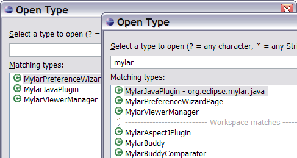
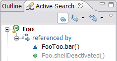
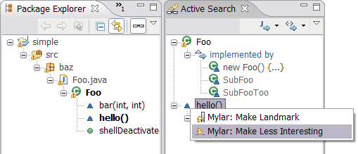
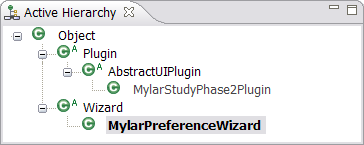
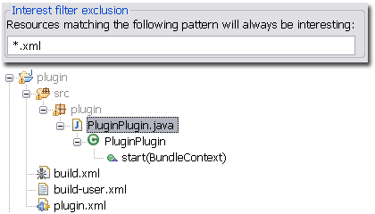
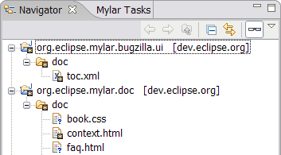
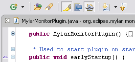
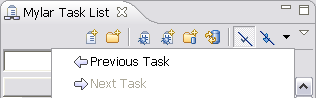
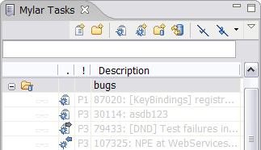
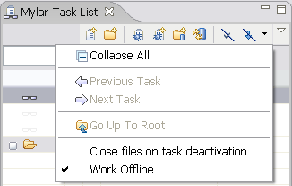

JUnit testing of task context

Features added since Mylar 0.3.12 are highlighted. Send questions to mylar-dev@eclipse.org. Submit feature requests to Bugzilla.
|
Optional monitor |
Can be enabled
voluntarily... if monitor is extended a message shows.
|
|
Web Documents in Context |
Web documents navigated to
are captured and displayed...
|
|
Links to web reports |
Tasks can be created with
web links, easily opened...
|
|
JUnit testing of task context |
To automatically test every
element in your task context add one of the two Mylar JUnit launch
configurations visible below. This has the effect of
automatically creating a suite with every interesting test in your
context (those that you've selected and edited), as well as every
test that has a predicted interest (those whose test methods show up
in the Active Search view).
|
|
|
|
Linked mode for Active Search |
The Active Search view now
has a "Link with Editor" button.
|
|
|
|
Predicted interest of errors |
The predicted interest of
errors can be turned and off in the Java preferences.
When on, Java elements that have errors get a predicted
interest, which means that they show up in views such as a the
package explorer. Once the errors are fixed the predicted
interest goes away. Set this on the Java preference page.
Off by default.
|
|
|
|
|
Reduced context size |
When a context is saved it now gets collapsed to remove redundancy in how interaction events contribute to interest. This results in an order of magnitude file size reduction, and much faster activation/deactivation. |
|
|
|
Open Type integration |
If a task context is active, the Open Type dialog will first types
that are in the task context, and then place those matches on top of
the list as you type. When no task is active the Open Type
dialog reverts to its standard behavior of showing types that you
have selected from within the dialog.  |
|
|
|
Qualified names in Active Search |
A toolbar button controls whether element names are qualified in the
Active Search view.  |
|
|
|
Increased laziness |
When no task is active, Mylar is inactive and Eclipse should behave as if Mylar were not installed. Also, when the Active Search view is closed, no background searches will be run. |
|
|
|
Drag-and-drop Landmark creation |
Elements such as methods and
types can be drag-and-dropped into the Active Search and Active
Hierarchy views. This will cause them to become landmarks, and
to populate those views with related elements. To get rid of
an element from an active view it needs to be made less interesting
than a landmark, which can be done by right-clicking it in any view
and selecting the "Make Less Interesting" action, or by hitting
Ctrl+Alt+Shift+Down Arrow when editing that element.  |
|
|
|
Active Search |
As you work and elements become landmarks
(bold decoration), Active Search eagerly finds related elements.
To force an element to populate the Active Search view manually make
it a landmark by right-clicking or hitting Ctrl+Alt+Shift+Up Arrow.
Use the pull-downs on the toolbar to alter the degree-of-separation
scope of the search. Note that elements with predicted
interest are gray.
|
|
|
|
|
Active Hierarchy |
Similar to Active Search, this view actively
finds and presents the type hierarchy of the current set of
landmarks.  |
|
|
|
|
Filter declarations in Package Explorer |
If you don't like Mylar's constant showing of Java members in the
Package Explorer, select the drop-down menu, then "Filters..." and
enable the "Mylar Java Declarations Filter". It will then
stick in the menu in case you want to toggle between modes.
|
|
|
|
|
Interest filter exclusions |
Resources that are always
considered interesting can be configured to always show when the
interest filter is on, via the root Mylar preference page.
Note that the parent of the resource, e.g. the project or folder,
needs to be interesting for it's children to show.
 |
|
|
|
|
Context highlighters |
You can associate a task with a highlighter. This can be useful if
you are using Mylar without the filtering support. It also
allows you to distinguish between task contexts if you have multiple
tasks active.
|
|
|
|
|
Ant editing |
Interest-based filtering is now supported in the Ant editor's
Outline view by toggling the glasses.
|
|
|
|
|
Interest-based content assist |
The top of the content assist menu will put the items that are in
your task context on top of the list, to enable quick selection via
arrow keys. Once you start typing the menu will work as usual. Note
that the Mylar Java Editor needs to be set as default for ".java"
files (this is the only new functionality that comes from the Mylar
Java editor).
|
|
|
|
|
Navigator interest filtering |
Interest filtering works in the navigator, similarly to the Package
Explorer. To temporarily un filter a node Alt+click it  |
|
|
|
|
Toggle auto folding |
Pressing the editor toolbar button with the Mylar glasses on it will
enable/disable Mylar's automatic folding. This can be useful
when needing to browse through the code, or copy/paste code around
(since Eclipse's folding support can cause odd expansions when
copying folded regions,
bug
104648).  |
|
|
|
|
Show all filtered children |
When you are using filtering in a Mylar view you have the option of
temporarily showing all children of a filtered node by <alt>clicking
a node that is not currently selected. For example, you can
<alt>click a source folder, keep the <alt> key down, and continue
drilling down until you find a method of interest.
|
|
|
|
|
Search within task context |
The automatically updated Mylar Task
Context working set can be searched as any other working set, either
via the popup menus or using the search dialog. For example,
to find all System.out/err calls before checking in, search for
"System." within the task context. To quickly search all references
click Alt+Shift+G.
|
|
|
|
|
Directly manipulate interest |
Directly manually manipulate the
interest level of one or more elements by right clicking them and using the two
Mylar actions in the popup menu. Keyboard shortcuts for these
are Ctrl+Alt+Shift+Up Arrow for Make Landmark, and
Ctrl+Alt+Shift+Down Arrow for Make Less Interesting. This now supports disjoint
selections.
|
|
|
|
|
Interest filtering for the Java Browsing perspective |
Interest filtering can be toggled for
the Packages, Types, and Members views simultaneously by clicking
the leftmost toolbar button visible below.
|
|
Task history |
The task list now has a
back/forward navigation history with drop-downs of previously
activated tasks.  |
|
|
|
Task context indication |
If a task has a context,
this will show as faint Mylar glasses on the task. The dark
glasses and bold label indicate which task is active.
|
|
|
|
|
Synchronization state |
If a bug report has information on it that has not been viewed, such
as new comments, the blue "incoming" overlay is displayed. If
a bug has changes on it that have been saved but have not been
committed to Bugzilla, the gray "outgoing" overlay is displayed.
A red overlay appears if there is a conflict.  |
|
|
|
|
Offline mode |
You can now explicitly state
whether you want to work with cached copies of Bugzilla reports and
avoid refresh with the server. In offline mode the cached bug
copy is always used. In online mode the Bugzilla server is
always checked for the latest report.  |
|
|
|
|
Task history navigation |
Navigate between previously
activate tasks using the Task List view's pull down menu (upper
right-hand corner of the toolbar).
|
|
|
|
Focus on a single task category |
To see only the tasks for a single category
select the "Go Into Category" action from the context menu. To
go back to viewing all tasks and categories under the root use the
"Go Up To Root" action in the Task List's toolbar pull down menu
(visible above).
|
|
|
|
|
Quick filter |
To filter task by name or
regexp type the filter text into the field and all matched tasks
will display. Note that this will temporarily suppress all
other filters. To clear the query press the "x" button to the
right of the text field.
|
|
|
|
|
Reminders |
Set a reminder for a task when creating it, or by selecting the
"Summary" tab of the Task Editor. When you start using Eclipse
on the given day the reminders will come up.
|
|
|
|
|
Open reports in web browser |
Bug reports can be opened with either the Bug Editor or the Internal
Web Browser. This can be set as a Task List preferences.
When the Bug Editor is open you can click the hyperlink to show the
report in the browser (e.g. to use a feature not yet available in
the editor, such as voting).
|
|
|
|
|
Move tasks directory |
Bug reports can be opened with either the Bug Editor or the Internal
Web Browser. This can be set as a Task List preferences.
When the Bug Editor is open you can click the hyperlink to show the
report in the browser (e.g. to use a feature not yet available in
the editor, such as voting).
|
|
|
|
|
Support Ctrl+click in Java Editor to navigate to bug |
Ctrl+click on a comment that
contains one of the following forms will open the bug with the given
id: bug# 123, bug 123,
Bug #123,
Bug#123. (Note that all of these are
case insensitive and can be followed by a colon or whitespace).
|
|
|
|
Custom queries |
To create a custom Bugzilla
query paste the query URL into the New Bugzilla Query dialog. This
enables support of queries that can not be configured via the
dialog, and as such some query hits may not open or format properly.
|